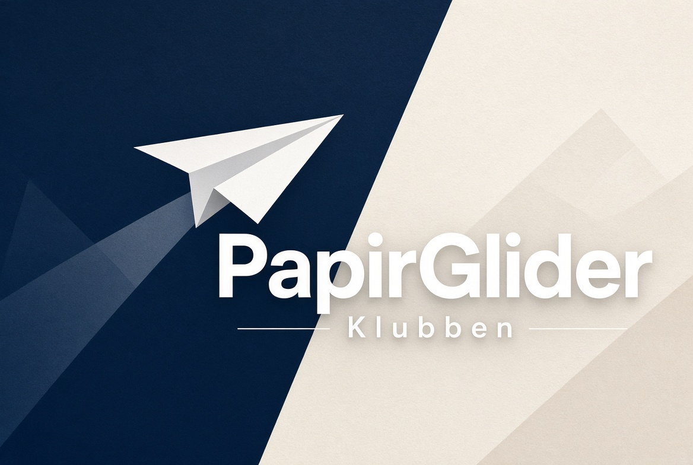

01
Tre grunnmodeller
Klassisk dart, Nakamura-låsen og en bred seiler. Samme papir, tre helt ulike flyegenskaper.
Et norsk verksted for presise folder, lange glideflukter og den lille gleden ved et A4-ark som plutselig oppfører seg som et fly.
Introduksjon
PapirGlider Klubben samler folk som tar papirfly på alvor — uten å miste leken. Vi folder dart for distanse, seilere for tid i lufta, og lærer hvordan små justeringer på bakkanten endrer hele flukten.
Du trenger ikke mer enn et A4-ark, en plan bordflate og tålmodighet til å trykke foldene skarpe. Resten er aerodynamikk i lommeformat: tyngdepunkt, vingevinkel, symmetri og kasteteknikk.

Hjemmesiden vår er et verksted, ikke en tom velkomstside. Gå videre når du er klar til å folde.
01
Klassisk dart, Nakamura-låsen og en bred seiler. Samme papir, tre helt ulike flyegenskaper.
02
Hvorfor flyet stiger, ruller eller dykker — og hva du bøyer for å rette det. Dette er den egentlige klubbferdigheten.
03
Utvalgte internasjonale tutorier innebygd på siden, slik at du kan folde med hendene mens du ser.